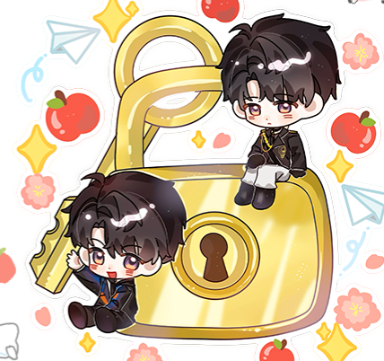
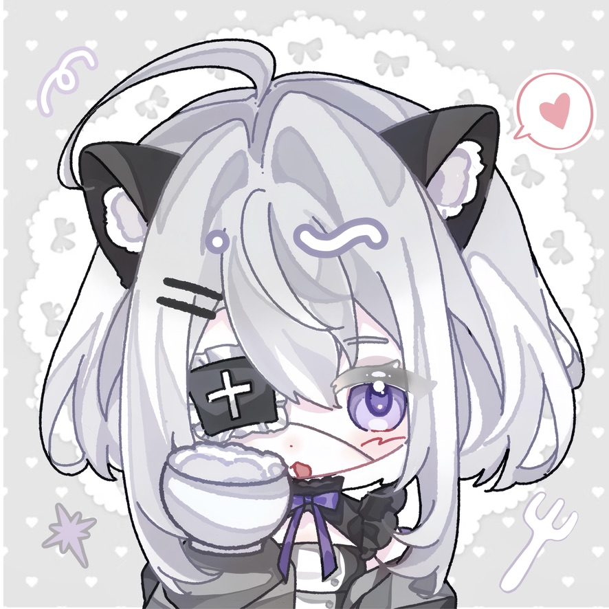
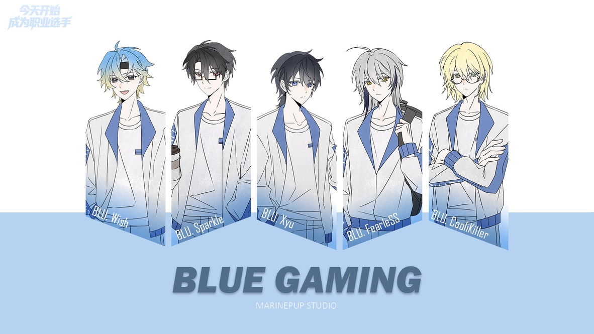

Locked Room with Caleb
一款像素解谜同人游戏，我的主要角色是策划、美工与文案；与@白晏迟合作成立了MarinePup Studio，是我作为独立游戏制作人的开始。

一款像素解谜同人游戏，我的主要角色是策划、美工与文案；与@白晏迟合作成立了MarinePup Studio，是我作为独立游戏制作人的开始。

我是没正经学过写作的写手和没正经学过画画的小画师。

从今天开始成为职业选手。简而言之是MarinePup Studio的第二个作品，是一个电竞向的游戏。但是现在由于缺乏剧情灵感缓慢进行中......写手自觉滚去看100场LPL比赛。